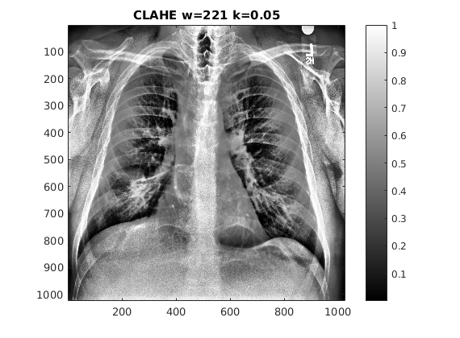
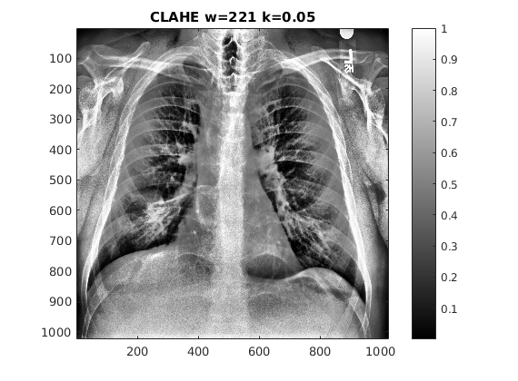

Contents
MyMainScript
tic; clf; close all; %Initial code for changing the default colormap myNumOfColors = 200; myColorScale = [ [0:1/(myNumOfColors-1):1]' , ... [0:1/(myNumOfColors-1):1]', [0:1/(myNumOfColors-1):1]' ];
Foreground Mask
%For getting the foreground mask we take the pixels that have intensity %greater than the threshold intensity(15 in our case). statue = imread('../data/statue.png'); [final_statue,mask_statue] = myForegroundMask(statue); figure,imagesc(statue),colormap(myColorScale),title('Original Image'),daspect([1 1 1]),colorbar; figure,imagesc(mask_statue),colormap(myColorScale),title('Foreground Mask'),daspect([1 1 1]),colorbar; figure,imagesc(final_statue),colormap(myColorScale),title('Final Image'),daspect([1 1 1]),colorbar;
Linear Contrast Stretching
We use the following function for implementing Linear Contrast Stretching:
where I_{min} and I_{max} are the maximum and minimum intensities in the image respectively
image_barbara = imread('../data/barbara.png'); output_barbara = myLinearContrastStretching(image_barbara); figure('name','LCS on Barbara') subplot(2,1,1),imagesc(image_barbara),colormap(myColorScale),title('Original'),daspect([1 1 1]),colorbar; subplot(2,1,2),imagesc(output_barbara),colormap(myColorScale),title('LCS'),daspect([1 1 1]),colorbar; image_TEM = imread('../data/TEM.png'); output_TEM = myLinearContrastStretching(image_TEM); figure('name','LCS on TEM') subplot(2,1,1),imagesc(image_TEM),colormap(myColorScale),title('Original'),daspect([1 1 1]),colorbar; subplot(2,1,2),imagesc(output_TEM),colormap(myColorScale),title('LCS'),daspect([1 1 1]),colorbar; image_canyon = imread('../data/canyon.png'); output_canyon = myLinearContrastStretching(image_canyon); figure('name','LS on Canyon') subplot(2,1,1),imagesc(image_canyon),colormap(myColorScale),title('Original'),daspect([1 1 1]),colorbar; subplot(2,1,2),imagesc(mat2gray(output_canyon)),colormap(myColorScale),title('LCS'),daspect([1 1 1]),colorbar; image_church = imread('../data/church.png'); output_church= myLinearContrastStretching(image_church); figure('name','LCS on Church') subplot(2,1,1),imagesc(image_church),colormap(myColorScale),title('Original'),daspect([1 1 1]),colorbar; subplot(2,1,2),imagesc(mat2gray(output_church)),colormap(myColorScale),title('LCS'),daspect([1 1 1]),colorbar; image_chest = imread('../data/chestXray.png'); output_chest = myLinearContrastStretching(image_chest); figure('name','LCS on Chest') subplot(2,1,1),imagesc(image_chest),colormap(myColorScale),title('Original'),daspect([1 1 1]),colorbar; subplot(2,1,2),imagesc(output_chest),colormap(myColorScale),title('LCS'),daspect([1 1 1]),colorbar; output_statue = myLinearContrastStretching(statue); figure('name','LCS on Statue') subplot(2,1,1),imagesc(statue),colormap(myColorScale),title('Original'),daspect([1 1 1]),colorbar; subplot(2,1,2),imagesc(output_statue),colormap(myColorScale),title('LCS'),daspect([1 1 1]),colorbar;
In figure 5 (Church) we do not observe any change. This is because in all the three channels the intensity 0 and 255 is present, thus the formula would not change the intensity of the pixels at all.
Histogram Equalization
image_barbara = imread('../data/barbara.png'); output_barbara = myHE(image_barbara); figure('name','HE on Barbara') subplot(2,1,1),imagesc(image_barbara),colormap(myColorScale),title('Original'),daspect([1 1 1]),colorbar; subplot(2,1,2),imagesc(output_barbara),colormap(myColorScale),title('HE'),daspect([1 1 1]),colorbar; image_TEM = imread('../data/TEM.png'); output_TEM = myHE(image_TEM); figure('name','HE on TEM') subplot(2,1,1),imagesc(image_TEM),colormap(myColorScale),title('Original'),daspect([1 1 1]),colorbar; subplot(2,1,2),imagesc(output_TEM),colormap(myColorScale),title('HE'),daspect([1 1 1]),colorbar; image_canyon = imread('../data/canyon.png'); output_canyon = myHE(image_canyon); figure('name','HE on Canyon') subplot(2,1,1),imagesc(image_canyon),colormap(myColorScale),title('Original'),daspect([1 1 1]),colorbar; subplot(2,1,2),imagesc(mat2gray(output_canyon)),colormap(myColorScale),title('HE'),daspect([1 1 1]),colorbar; image_church = imread('../data/church.png'); output_church= myHE(image_church); figure('name','HE on Church') subplot(2,1,1),imagesc(image_church),colormap(myColorScale),title('Original'),daspect([1 1 1]),colorbar; subplot(2,1,2),imagesc(mat2gray(output_church)),colormap(myColorScale),title('HE'),daspect([1 1 1]),colorbar; output_chest = myHE(image_chest); figure('name','HE on Chest') subplot(2,1,1),imagesc(image_chest),colormap(myColorScale),title('Original'),daspect([1 1 1]),colorbar; subplot(2,1,2),imagesc(output_chest),colormap(myColorScale),title('HE'),daspect([1 1 1]),colorbar; output_statue = myHE(statue); figure('name','HE on Statue') subplot(2,1,1),imagesc(statue),colormap(myColorScale),title('Original'),daspect([1 1 1]),colorbar; subplot(2,1,2),imagesc(output_statue),colormap(myColorScale),title('HE'),daspect([1 1 1]),colorbar;
In figure 5, Histogram equalization tries to convert the histogram of the current image to a uniform pdf histogram, thus it is able to bring out the hidden intensities in the image(which have lower values in the histogram) as well. I would prefer Histogram Equalization over Contrast Stretching.
Histogram Matching
image_ret = imread('../data/retina.png'); image_ret_ref= imread('../data/retinaRef.png'); output_ret_ref = myHM(image_ret,image_ret_ref); % figure('name','Histogram Equalization on retina image'); figure,imagesc(image_ret),colormap(myColorScale),title('Original Image'),daspect([1 1 1]),colorbar; figure,imagesc(image_ret_ref),colormap(myColorScale),title('Reference Image'),daspect([1 1 1]),colorbar; figure,imagesc(mat2gray(output_ret_ref)),colormap(myColorScale),title('Matched Image'),daspect([1 1 1]),colorbar;
The input image was a bit dull as compared to the reference image but after histogram matching, the input image got the same brightness level as that of the reference image (due to the histogram of first image getting matched to that of the second)
Contrast Limited Adaptive Histogram Equalization
image_barbara = imread('../data/barbara.png'); output_barbara = myCLAHE(image_barbara,30,0.05); output_barbara1 = myCLAHE(image_barbara,100,0.05); output_barbara2 = myCLAHE(image_barbara,5,0.05); output_barbara3 = myCLAHE(image_barbara,30,0.025); % figure('name','CLAHE on Barbara','Position', [10 10 2700 1800]) figure,imagesc(image_barbara),colormap(myColorScale),title('Original'),daspect([1 1 1]),colorbar; figure,imagesc(output_barbara),colormap(myColorScale),title('CLAHE w=61 k=0.05'),daspect([1 1 1]),colorbar; figure,imagesc(output_barbara1),colormap(myColorScale),title('CLAHE w=201 k=0.05'),daspect([1 1 1]),colorbar; figure,imagesc(output_barbara2),colormap(myColorScale),title('CLAHE w=11 k=0.05'),daspect([1 1 1]),colorbar; figure,imagesc(output_barbara3),colormap(myColorScale),title('CLAHE w=61 k=0.025'),daspect([1 1 1]),colorbar; image_TEM = imread('../data/TEM.png'); output_TEM = myCLAHE(image_TEM,30,0.05); output_TEM1 = myCLAHE(image_TEM,100,0.05); output_TEM2 = myCLAHE(image_TEM,5,0.05); output_TEM3 = myCLAHE(image_TEM,30,0.025); % figure('name','CLAHE on TEM','Position', [10 10 2700 1800]) figure,imagesc(image_TEM),colormap(myColorScale),title('Original'),daspect([1 1 1]),colorbar; figure,imagesc(output_TEM),colormap(myColorScale),title('CLAHE w=61 k=0.05'),daspect([1 1 1]),colorbar; figure,imagesc(output_TEM1),colormap(myColorScale),title('CLAHE w=201 k=0.05'),daspect([1 1 1]),colorbar; figure,imagesc(output_TEM2),colormap(myColorScale),title('CLAHE w=11 k=0.05'),daspect([1 1 1]),colorbar; figure,imagesc(output_TEM3),colormap(myColorScale),title('CLAHE w=61 k=0.025'),daspect([1 1 1]),colorbar; image_canyon = imread('../data/canyon.png'); output_canyon = myCLAHE(image_canyon,30,0.05); output_canyon1 = myCLAHE(image_canyon,100,0.05); output_canyon2 = myCLAHE(image_canyon,5,0.05); output_canyon3 = myCLAHE(image_canyon,30,0.025); % figure('name','CLAHE on Canyon','Position', [10 10 2700 1800]) figure,imagesc(image_canyon),colormap(myColorScale),title('Original'),daspect([1 1 1]),colorbar; figure,imagesc(mat2gray(output_canyon)),colormap(myColorScale),title('CLAHE w=61 k=0.05'),daspect([1 1 1]),colorbar; figure,imagesc(mat2gray(output_canyon1)),colormap(myColorScale),title('CLAHE w=201 k=0.05'),daspect([1 1 1]),colorbar; figure,imagesc(mat2gray(output_canyon2)),colormap(myColorScale),title('CLAHE w=11 k=0.05'),daspect([1 1 1]),colorbar; figure,imagesc(mat2gray(output_canyon3)),colormap(myColorScale),title('CLAHE w=61 k=0.025'),daspect([1 1 1]),colorbar; output_chest = myCLAHE(image_chest,40,0.05); output_chest1 = myCLAHE(image_chest,110,0.05); output_chest2 = myCLAHE(image_chest,5,0.05); output_chest3 = myCLAHE(image_chest,40,0.025); % figure('name','HE on Chest','Position', [10 10 2700 1800]) figure,imagesc(image_chest),colormap(myColorScale),title('Original'),daspect([1 1 1]),colorbar; figure,imagesc(output_chest),colormap(myColorScale),title('CLAHE w=81 k=0.05'),daspect([1 1 1]),colorbar; figure,imagesc(output_chest1),colormap(myColorScale),title('CLAHE w=221 k=0.05'),daspect([1 1 1]),colorbar; figure,imagesc(output_chest2),colormap(myColorScale),title('CLAHE w=11 k=0.05'),daspect([1 1 1]),colorbar; figure,imagesc(output_chest3),colormap(myColorScale),title('CLAHE w=81 k=0.025'),daspect([1 1 1]),colorbar; toc
Elapsed time is 736.835093 seconds.
 
